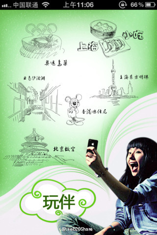

@沈卓立TouchChina 与你们的产品有对接吗？//@ssywtt-EEFOCUS: 现在各大公园景区门上都写着一个如何操作接受公园内部导游软件的提示，打开你的手机蓝牙，接受公园自动给传输的文件安装上就可以//@Visoar: 现在终于有这种产品出来了
@Web20Share:
【玩伴：把导游装进手机】 把导游装进手机里,听风景在说话! 外出旅游你必定需要一个熟悉旅游目的地的专业导游,让“玩伴智能导游”来做你的私人导游,带你玩转每一个城市,让你的旅行轻松无忧! 玩伴是什么? “玩伴”是基于智能手机的导游软件,是自助旅游最佳伴侣。 她是景区…  网页链接
网页链接
- 